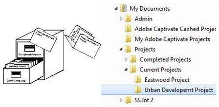

Understanding How Folders Are Organised
Below is a diagram of a manual filing system and its computerised equivalent. The computerised system is much like a manual filing system where folders are equivalent to the drawers and compartments in a very large filing cabinet, while files are the sheets of paper containing the stored information. You may have further divisions of the filed information, depending on what's the best way to file it. For example, someone working on a number of different projects may choose to create a folder to hold all their projects, and inside that, one folder for each project so that the files relating to the same project can be kept together.
This is often referred to as a hierarchical folder structure as there is a top level folder, followed by another folder nested within it followed by either other folders or files.

On the other hand, a secretary working for two business partners may create a filing system that organises documents by the partners' names and then the document type.